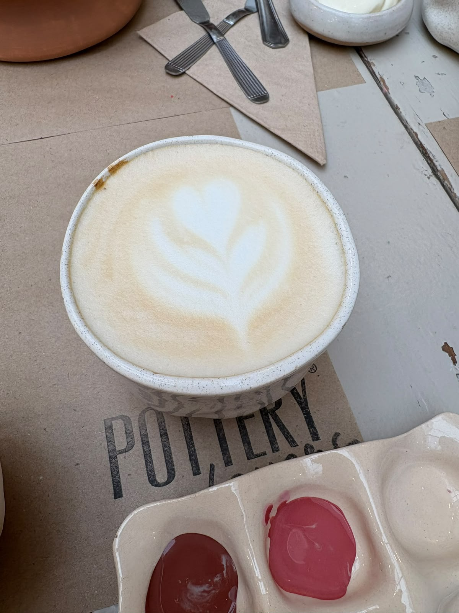
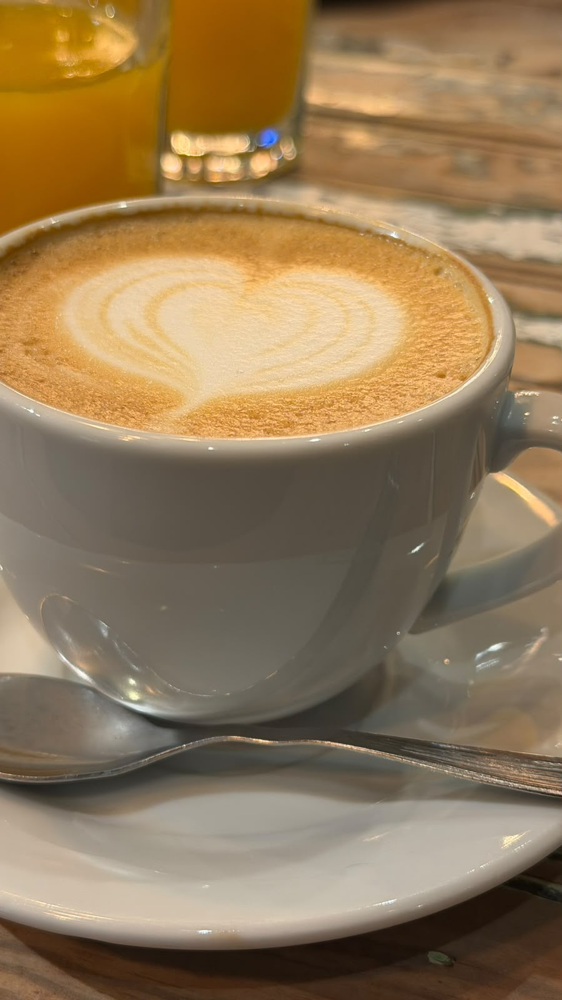
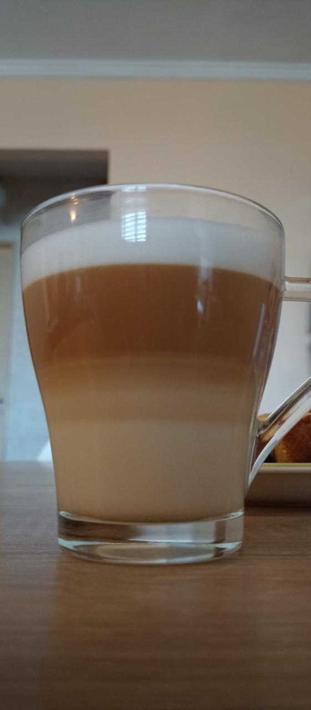

Beneficios
Propiedades del Café
El café contiene cientos de compuestos biológicos activos, siendo los más importantes la cafeína, los ácidos clorogénicos, los diterpenos (como el cafestol y el kahweol) y minerales como el potasio y el magnesio. Estas sustancias le otorgan al café un perfil con propiedades estimulantes, antioxidantes y metabólicas muy potactes.
Beneficios
El café es un superalimento natural que, consumido con moderación (entre 2 y 4 tazas al día y preferiblemente sin azúcar), ofrece un impacto extraordinario en la salud física y mental gracias a su riqueza en cafeína y antioxidantes polifenólicos. A nivel cerebral, actúa como un potente optimizador cognitivo al bloquear la adenosina; esto elimina el cansancio de forma inmediata, mejora el estado de ánimo, eleva la concentración y acelera los tiempos de reacción, además de crear un escudo neuroprotector que reduce a largo plazo el riesgo de padecer enfermedades como el Alzheimer y el Parkinson.


